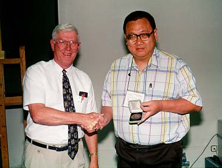

|
|||||||||||||||||||||||||||
|
Andy Liu (right) receiving his David Hilbert Award from WFNMC President Ron Dunkley at the WFNMC meeting at ICME-8 in Sevilla, Spain, in July 1996. Andrew Chiang-Fung LiuBorn 15 March 1947 Guangzhou, China
This page will contain tributes to Andy. From Wen-Hsien SunI was surprised when I suddenly received the call that Professor Andy Liu unfortunately passed away on March 26, 2024, and my mood could not be healed for a long time. Although Professor Liu has been in poor health in recent years and has been in and out of the hospital many times, with his strong vitality, he survived safely in the end. This time, he was hospitalized due to prostate cancer, inability to excrete carbon dioxide from the lungs, and recurrence of cellulitis in his feet. After the doctors' full treatment, he temporarily improved. A few days ago, the doctors considered transferring him out of the hospital and placing him in a care centre. Unexpectedly, he died of respiratory arrest the next day at the age of 77, which made everyone deeply surprised and sad! Professor Liu has been passionate about promoting mathematics education throughout his life and has trained many mathematics and technology talents around the world. He serves as a professor of mathematics at the University of Alberta in Canada and has won the Best Professor Award and Distinguished Educators Award many times. In his spare time, he chaired the Edmonton Math Club, which greatly improved the mathematical abilities of primary and secondary school students in Alberta. At the same time, he also organizes Summer Camps, Math Fair, Alberta High School Mathematics Competitions, Tournament of the Towns and other very meaningful activities. The most important thing is that he recommends many puzzles and board games suitable for all ages, bringing everyone endless happy! The mathematics education concepts spread by Professor Liu are very valuable. I personally learned a lot of exquisite mathematical research techniques from him. He often raises some very interesting unsolved questions. I use these questions for primary and secondary school students in Taiwan to discuss and study to broaden their horizons. Whenever students have good solutions or special ideas, Professor Liu help organized and submitted them to some famous mathematics journals. More than twenty papers from primary and secondary school students have been published. Professor Liu has unique skills in solving mathematical problems. His solutions are unconventional, concise and creative. The problem-solving books he published for the Tournament of the Towns, An In-Depth Study of the International Mathematics Competition Junior High School Division, Upper Elementary School Mathematics ---- A textbook based on the International Mathematics Competition, and the Soviet Union Mathematical Olympiad are all treasures in this field. In addition, Professor Liu has also published many monographs on geometry and combinatorics. After his visit to China this year, he planned to translate the works of Chinese mathematics competition coaches into English so that teachers and students around the world can study China's outstanding mathematics competition teaching materials. It is a pity that Professor Liu's sudden death made it impossible to realize this plan. Professor Liu's dedication to mathematics education is self-evident. Inspired by his philanthropic spirit, in addition to Taiwan, USA and Canada, I accompanied him on visits to Australia, Bulgaria, China, Hong Kong, Indonesia, Japan, South Korea, Malaysia, Nepal, the Philippines, South Africa, Sri Lanka, and Thailand, giving lectures to teachers and primary and secondary school students in the country. He also travelled alone to the United Kingdom, Austria, Russia, Zimbabwe and other countries, travelling all over the world. Professor Liu is not only specialized in mathematics, he is also proficient in Chinese and world history. He also has in-depth research on world geography. Professor Liu likes to travel very much. Everywhere he goes, he was actually understanding the history, culture and customs of the country. Every time I chats with Professor Liu, he can talk endlessly about his rich and exciting knowledge and experiences. When Professor Liu came to Canada from Hong Kong to study, his father told him to focus on his studies and not to have a girlfriend. As a result, he was too immersed in academic research and delayed his marriage and never married. It was not easy for him to live alone in Western society. During his college years, he had to work in a Chinese restaurant to earn living expenses. Professor Liu lives a very frugal life, wears simple clothes and eats casually. This is because he has gastrointestinal and kidney diseases due to long-term consumption of salty and greasy food. It also makes him excessively obese, which affects his heart and lung function. But when his income became stable as a teacher, he supported his students very generously and often gave them books, puzzles and board games, and even paid for them to go abroad to participate in competitions or travel. In few years ago, he donated all the books, puzzles and board games he collected throughout his life to Shenzhen Middle School in China to establish an International Mathematics Resource Center, hoping that more teachers and students could benefit from it. The respected Professor Liu has left us. He left behind many valuable mathematical assets and selfless dedication that are worthy of our inheritance. Let us embrace mathematics happily together! Wen-Hsien SUN
From Robert GeretschlägerAndy meant so much to so many of us involved with the WFNMC, and the stories I can tell about my own memories of him are surely similar to those of others. He had a special talent for getting people engaged in whatever puzzles and activities he happened to be thinking about, and motivating them to be more actively involved in many of these activities. Here are some of my personal reflections on this aspect of his personality. An early memory of mine is his visit to Austria to stay with us in Graz in 1996. This was right after that year's ICME in Seville, where he had been honored with the Hilbert award. This would turn out to be the last such award ever awarded, as the Erdös and Hilbert awards were merged to a single award after that year. Along with the joy of having Andy as a guest, I recall being hugely impressed at having an actual Hilbert award in our house! My own involvement in the WFNMC was raised to a higher level when he invited me to chair one of the Topic Groups at the WFNMC meeting in Zhong Shan in 1998. At the time, I was just starting the Kangaroo competition in Austria and not yet involved with the IMO. I had participated in the last WFNMC congress in Bulgaria, but was still a bit skeptical about travelling from Europe to East Asia for such a meeting. Thanks to Andy, I ended up making the trip, and this turned out to have a profound impact on my further career. Another invitation from Andy I was lucky enough to receive was to the Math Fairs meeting at BIRS in Banff in 2005. Travelling to Alberta for this meeting gave me the opportunity to visit the University of Alberta in Edmonton, and see him in his native habitat, as he had seen me when he was in Graz. Andy was quite the central motivator for the Math Fairs movement, and this was great to experience. Of course, he always carried around some puzzle or other to present whenever there was a lull in the conversation, so this type of mathematical content was second nature for him. If nothing else, he always had some origami paper in his pocket and some interesting ideas about what you could do with it. |
||||||||||||||||||||||||||
|
|||||||||||||||||||||||||||
 |
|||||||||||||||||||||||||||
![[Andy]](obitliugraz.jpg)